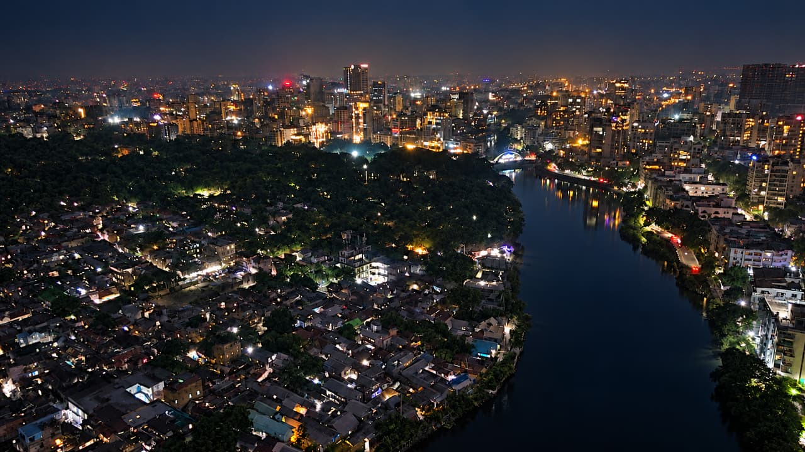
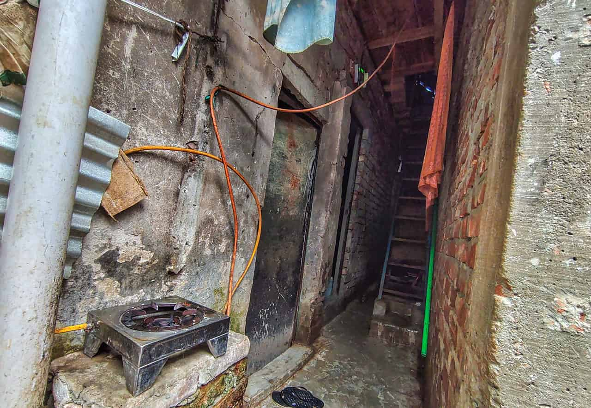
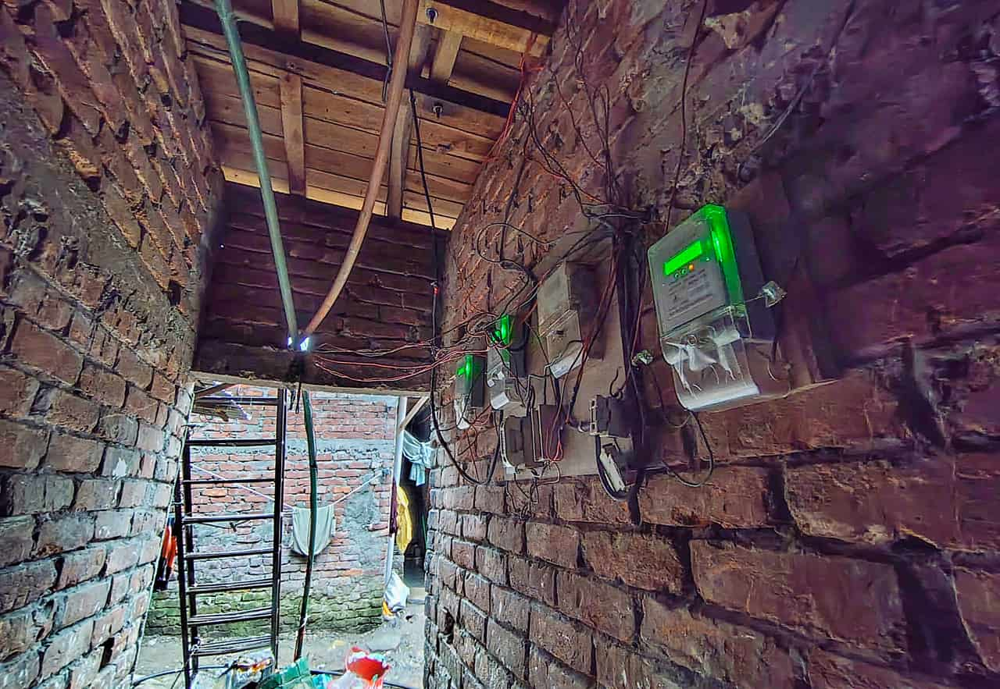

Jannat Begum, a domestic worker living in Dhaka’s Korail slum, pays Tk 600 a month to run a light and a fan in her single-room home. But according to government electricity tariffs, her estimated usage should cost less than Tk 450.
Jannat’s electricity, each month
What she pays, against what her estimated usage would cost at government tariffs
What she pays
Tk 600
Her estimated usage, at government tariffs
less than Tk 450
Hers is not an isolated case. In the absence of direct utility connections, thousands of low-income families in Dhaka’s slums depend on unauthorised utility service providers who charge far more than the official rates for electricity, gas and water.
Slum residents allege that syndicates comprising local actors and politically influential people run these systems.
“Governments come and go, but our suffering never ends,” Md Johny, a resident of Kalyanpur Pora Basti, told this correspondent.
Architect and urban planner Salma A Shafi said the government lacks a long-term plan for these settlements of low-income people whose numbers are growing.
“As the slum population increases, residents are forced to seek informal means to meet their basic needs at additional costs. Over time, these illegal arrangements become the norm, as there is little oversight by the authorities.”
According to city corporation officials, Korail, the country's largest slum, has around 17,000 households. Bhashantek slum has about 5,000 households, while Kalyanpur Pora Basti is home to more than 3,000. Each household has five members on average. All three slums are under Dhaka North City Corporation (DNCC).
Between May and July, this correspondent interviewed more than 50 residents of the three slums, people involved in unauthorised utility networks and officials from relevant agencies.
Seeking anonymity, a senior DESCO official said a single main electricity meter in a slum can serve up to 20 households, with power billed at residential tariff rates.
The existing rules, however, do not specify the process through which electricity connections should be provided to households or makeshift structures in slums. As many slum residents lack the documents required for individual connections, electricity is often supplied through shared-meter arrangements involving NGOs or other authorised intermediaries, said the official.
But in many cases, syndicates gain control of these meters through which they illegally supply electricity to slum households, added the official.
How slum electricity is supplied
According to a senior DESCO official, who sought anonymity
Mizanur Rahman, a former member of Bangladesh Energy Regulatory Commission (BERC), said, “So-called ruling-party members make these arrangements in slums for commercial gain, while many residents depend on them because they provide an easier way to obtain electricity in the absence of legal individual connections.”
AHM Shafiquzzaman, president of Consumers Association of Bangladesh (CAB), said, “Though the government has changed, the system continues to run as before. Slum dwellers use electricity, water and gas from government supply lines but have to pay these syndicates to get these services.”

SYNDICATES’ CONTROL ON KORAIL
According to DESCO’s latest tariffs effective from June, residential electricity tariffs range from Tk 5.32 to Tk 17.35 per unit depending on consumption.
Mizanur Rahman estimated that a household using a 65-watt fan for 22 hours and a 40-watt light for eight hours a day consumes about 52.5 units of electricity per month.
Based on this calculation, Korail slum resident Jannat Begum’s estimated monthly bill would be below Tk 450.
“My room’s rent is Tk 5,000. I pay Tk 300-400 a month for water and Tk 500 for a gas connection to a single-burner stove,” said Jannat, who received utility connections from a man named Md Jamal Badsha.
Jannat’s month
In her own figures
Room rent
Tk 5,000
Electricity
Tk 600
Gas
Tk 500
Water
Tk 300-400
What would your utility bill look like if you lived in a slum?
Drag the slider and enter your consumption of electricity and water.
Electricity: Jannat’s room
Outside the slum, Jannat’s fan and light would cost Tk 376 a month. She pays Tk 600, Tk 224 more.
Monthly use
52.5 units
Outside the slum
Tk 376
Jannat pays
Tk 600
Korail, sub-meter
Tk 683
Kalyanpur Pora Basti
Tk 893
Bhashantek
not reported
Jannat’s estimated 52.5 units are just 2.5 units over the 50-unit lifeline limit. At 50 units or less, the whole month bills at Tk 4.63 a unit; one unit more adds Tk 38.59 (Tk 329.18 to Tk 367.77).
If every month were like this, Jannat would pay Tk 2,688 more a year than outside the slum.
How the outside-the-slum bill adds up
| Charge | Units | Tk a unit | Tk |
|---|---|---|---|
| Units 1-75 | 52.50 | 5.26 | 276.15 |
| Demand charge, 1 kW × Tk 42 | 42.00 | ||
| Meter rent | 40.00 | ||
| VAT, 5% of 358.15 | 17.91 | ||
| Total | 7.16 | 376.06 |
| Monthly use | Tk a unit |
|---|---|
| Whole month 50 units or less (lifeline) | 4.63 |
| Units 1-75 | 5.26 |
| Units 76-200 | 8.50 |
| Units 201-300 | 9.10 |
| Units 301-400 | 9.62 |
| Units 401-600 | 15.01 |
| Units above 600 | 17.35 |
Water: Kanchana’s family
At WASA’s price, the water Kanchana’s family uses would cost Tk 115 a month. She pays Tk 300, 2.6× as much.
At WASA’s price
Tk 115
Kanchana pays
Tk 300
For Tk 300 to be a fair price, each person would need to use about 200 litres a day.
Jamal’s water line
His 40 families pay Tk 12,000-16,000 a month. The same water at WASA’s price: Tk 4,582. Collected above WASA’s price: Tk 7,418-11,418.
If every month were like this, Kanchana’s family would pay Tk 2,220 more a year than WASA’s price.
Several other slum residents showed this correspondent four main electricity meters and said one of those was registered in the name of Jamal who provides electricity to 179 households.
They further said that Jamal, who had close ties with local Awami League leaders in the past, continues to run his illegal utility business by making arrangements with a group of BNP loyalists.
When contacted, the syndicate owner Md Jamal Badsha said 139 of his customers have sub-meters, while 40 are provided electricity through direct lines. He charges sub-meter users Tk 13 per unit and others Tk 250 per electrical device.
Jamal’s electricity customers
179 households, residents say. The split and the prices are Jamal’s own account.
139
on sub-meters
40
on direct lines
This correspondent obtained a copy of Jamal’s electricity meter bill for June 2026, which shows he paid DESCO Tk 7.47 per unit.
What a syndicate owner Md Jamal Badsha pays per unit, and what he charges
His June 2026 bill, and his own price to sub-meter users
He pays DESCO
Tk 7.47
He charges sub-meter users
Tk 13
At least 66%
more than he pays; 74% if his bill already includes VAT
According to residents, people linked to the AL controlled utility distribution in parts of Korail before the AL government's ouster on August 5, 2024. Following the political changeover, control shifted to individuals associated with the BNP.
Who controls utility distribution in parts of Korail
According to residents
People linked to the AL
August 5, 2024
Individuals associated with the BNP
Asma Begum, joint convener of BNP’s Banani Thana Mahila Dal, oversees electricity distribution to around 200 families through bills issued in the name of her son, Md Qayyum Sarkar.
When contacted, Asma Begum said DESCO had previously provided one meter for several families. Later, a main meter was obtained in her husband’s name to provide sub-meters to beneficiary families.
“We cannot always get assistance from DESCO staff when needed… We have employed a few workers who fix problems and work throughout the month. There is a service charge for this. That’s why customers are charged an additional amount,” she said.
Residents of Kalyanpur Pora Basti said they used to get electricity supply through two main meters during the AL government’s tenure. The number of meters rose to eight after the July uprising.
They said the syndicates that control the meters charge them between Tk 15 and Tk 18 per unit.
“Following the uprising, the charge dropped to Tk 12 per unit. But it rose again,” said 30-year-old Johny, who grew up in the slum.
What Kalyanpur Pora Basti residents pay per unit
Residents’ accounts, in Tk per unit. No figure was reported for before the uprising.
After the uprising
Tk 12
Now
Tk 15-18
Md Jewel Hossain Billal, who collects bills for one of the syndicates, said the increase resulted from higher government tariffs.
“We charge Tk 17 per unit. DESCO charges us Tk 9.75 excluding taxes. The rate went up after the new tariffs took effect in June,” he said.

ILLEGAL GAS CONNECTIONS
Residents of Korail slum alleged that a group led by the syndicate owner Md Jamal Badsha provides illegal gas connections, with the help of Md Shahabuddin, who claimed to be a BNP member from Ward 19 under Banani thana.
They pay Tk 500 to Tk 600 monthly for a single burner and Tk 1,000 to Tk 1,200 for a double burner.
When asked, Jamal said, “I give Shahabuddin all the money collected from gas bills. He controls the lines. He comes every month to collect the money.”
He further said he provided gas connections to around 50 families in the slum.
Shahabuddin, however, denied controlling the gas lines.
“I’m merely a worker… I don’t run this business,” he said.
ILLEGAL WATER PIPELINES
According to Dhaka WASA, Korail slum has around 1,500 metered water connections set up with assistance from BRAC, Dushtha Shasthya Kendra (DSK) and other NGOs.
Residents said several local groups illegally tapped into authorised water connections, extended pipelines to households and charged them for the service.
How the water reaches households
Legal connections according to Dhaka WASA; the illegal lines according to residents
Around 1,500 metered WASA connections, set up with BRAC, DSK and other NGOs
Illegal taps, with pipelines extended to households who are charged for the service
Jamal said he supplied water to 40 families at Korail for Tk 300-400 each per month.
Kanchana Begum, a garment worker, said, “No matter how little water we use, we have to pay Tk 300 for our family of three.”

WHAT OFFICIALS, EXPERTS SAY
DESCO
Rashedur Rahman, managing director for operations at DESCO, said, “We are working to install meters in all households as per government instructions. The process will take time, but implementation has started.”
Titas Gas
Titas Gas Manager Shah Newaz Chowdhury said local syndicates repeatedly reconnect lines after Titas personnel remove the illegal connections.
He also acknowledged that some Titas officials may be involved in the illegal business and said the problem could not be solved by Titas alone.
Dhaka WASA
Nayan Sarkar, Dhaka WASA field officer for Korail, acknowledged that some connection holders illegally distribute water in the slum, turning it into a profitable business.
“There should be no additional charges for taking water from a metered line,” he said.
DNCC
When contacted, Mohammad Mamun Ul Hasan, chief of Social and Slum Development at DNCC, said the city corporation currently has no plan to provide new utility connections to slum households.
He further said DNCC would follow any policy or legal framework introduced by the government in this regard.
Experts, however, suggested bringing slums under a formal system and adopting a comprehensive policy for their management.
“Such steps will not only help increase government revenue but also ensure that slum residents receive safe and affordable services,” said Architect and urban planner Salma A Shafi.
This would benefit both residents and the state, she added.